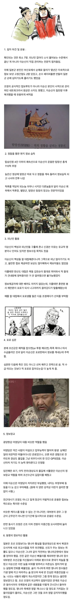

싸우기 전부터 이기는 전투를 만들고 이기는 전투만 나가서 이긴다
이게 쉬운게 아님....

싸우기 전부터 이기는 전투를 만들고 이기는 전투만 나가서 이긴다
이게 쉬운게 아님....
방어하는 입장에서 이기는 싸움만 한다는게 가능한건가 싶긴 하네..
선전이후구승
앞뒤가 바뀌셨습니다.
승병 선승이후구전 : 이기는 군대는 먼저 이기고 난 뒤(이긴 근거를 만든 뒤) 전투하며
패병 선전이후구승 : 패배하는 군대는 먼저 전투 하고 난 뒤(그냥 꼬라박고) 승리를 구한다.
손자좀 치는 놈인가...?
역시 틀려줘야 제대로 답을 해준다니까
이기는 전장인지 판별하는게 능력이지 ㅋㅋ
애초에 '이기기 쉬운 전투' 를 파악하는거 자체가 개사기 능력이니까
저거 몰라서 걍 씹고트아님? 임진왜란에서 꿀빠는 전투만 하는게 가능한가 ㅋㅋㅋㅋㅋㅋㅋㅋ
勝兵先勝而後求戰，敗兵先戰而後求勝。이기는 군대는 먼저 이겨 놓고 싸움에 나선다.
- 손자병법
그냥 조선 수군이 사기여서 그런거 아님? <- 이말을 한방에 잠재워주신 하지메 사토루
가명 원균
진짜 인류 역사상 해군 goat
지피지기면 백전불태지
이기기 쉬운 전투만 하는것도 능력아님...?
정보전은 유구한 전통
이순신 장군님이 이순신 그 정도 아니라고 하셨는데 너 지금 장군님의 평가에 토를 다는 거야?
공식이 뭘 알아
게임 좆같이 하는게 쉬운건줄 아느냐
이기기 쉬운 싸움만 해낸게 얼마나 GOAT인데
어느 분야나 쉬워 보인다면 하는 사람이 개쌉 고수인겁니다ㅋㅋㅋ
게임마냥 싸우기전에 승률표시되는것도 아니고 이길각 파악하는거 자체가 개쩌는 능력임
한타각 보고 한타 전에 이길지 말지 파악하기
유불리 전장 파악하고 특정 전장으로 유도하기
이것을 위해 수시로 시야잡고 바뀐 전황 재판단하기
>>> 개씹어려움
빌드업이 제일 어려운건디
그 주장을 바뀌말하면 명량빼고 지는 싸움만 건 일본군 장군들이 얼마나 병신인가로 바뀌는거 아니냐
명량은 질 싸움도 이겼다는거임
걍 억까가 불가능 함
이기기 쉬운 싸움(레이너 특공대 기준)
이길수 있는 전투인지 아닌지 판단하는것도 능력이지
ㅂㅁ은? 원종이임?
이길 환경을 만들고 이기는 장군
최고아니냐?
와 장군님...
이기기 쉬운 전장만 골라싸우는건 쉬운줄 아나봄ㅋㅋㅋㅋ
이순신 장군이 노력한 것은 맞는데
애초에 임진왜란이 쉬운 전투만 골라 싸울 만만한 전쟁이 아니었어
부산포해전같은 경우에도
수적열세+위치 불리
상황에서 이긴거
이중간첩 요시라 이야기가 궁금해지네??
이런 일화 하나하나 들어보면 진짜 하늘이 내린 장군같다 어떻게 오랜 평화기 속에서 저런 능력을 다 가지고 나왔지
저딴 쌉소리 씨부리는 놈들한테 니가 가서 이겨보라해야함
그런놈 열에 일곱은 그냥 제2 제3의 원균임
해전만 아니라 육전에서도 증명하신 분으로 끝
이기는 싸움만 한다 = 상대는 지는 싸움만하는 병신이냐?
지면 뒤지는건데 이기는 싸움만 해야지
리스폰 되는것도 아닌데ㅋㅋ
상대입장에선 게임 줘까치하네 인데
그게 겜잘알이였을뿐 ㅋㅋㅋㅋ
롤로치면 챌린챌린챌린저라는거지?
그러니깐 '이기는 싸움을 위한' 빌드업 천재이셨단 말이지?